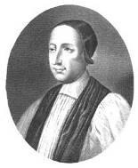
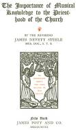
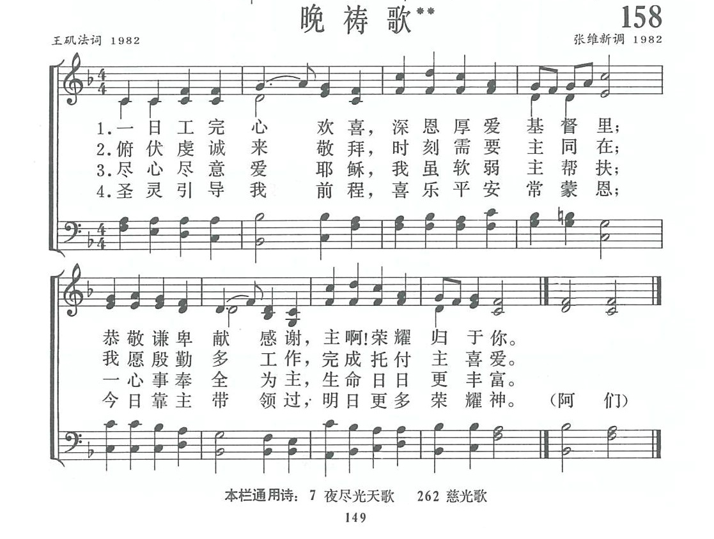

1490 GP373 All Praise to Thee, My God
_Ken, Thomas (Tallis) 晚祷
|
|
|
|
1 All praise to You, my God, this night,
For all the blessings of the light.
Keep me, O keep me, King of kings,
Beneath the shelter of Your wings.
2 Forgive me, Lord, for this I pray,
The wrong that I have done this day.
May peace with God and neighbor be,
Before I sleep restored to me.
3 Lord, may I be at rest in You
And sweetly sleep the whole night thro'.
Refresh my strength, for Your own sake,
So I may serve You when I wake.
4 Praise God, from whom all blessings flow;
Praise Him all creatures here below;
Praise Him above, ye heav'nly host;
Praise Father, Son, and Holy Ghost.
Baptist Hymnal, 1991 |
|
|

https://www.zanmeishige.com/tab/25741.html?songbook=1&index=373 |
|
|
|

- 米勒Millet。晚禱 The Angelus
https://hymnary.org/person/Ken_Thomas


肯恩
（Thomas Ken,
1637-1711）
英國教牧，聖詩作家。
肯恩正直敢言，曾為主教，並英王查理二世宮廷牧師，講道時，常當英王面前指責宮廷淫佚奢侈等罪惡。但查理許為諍友。後為主教，因不肯對英王威廉及瑪莉（William
& Mary），得罪當權者，於1691年去職。獲釋放後，在貧困中安度二十年去世。
在任溫徹斯特學院院長
（Winchester
College）時，為鼓勵學生禱告寫了禱告手冊
（Manual of
Prayer），其中載有早晚的禱告詩，只有“讚美真神”每篇的結束，成為今天教會通行的“三一頌”。
简多马是英王查理二世立的圣公会主教。他身兼多职：教区主教、海军牧师、马利公主在海牙的随团牧师，以至查理二世的宫廷牧师等。不过，他的圣诗都不是在上述任职期间作的，而是在他重返温彻斯特母校(
Winchester College)任教时写的。在学校他除了教书外，很注意青年人的成长，特地为他的学生写了一本《温切斯特大学学生祈祷手册》（Manual
of Prayers for the Use of the Scholars of Winchester College，1674）。
在书的后面附上一首
Awake，my
soul，and
with the sun 晨歌（普476，颂235，生492，颂新27）和一首
https://hymnary.org/text/awake_my_soul_and_with_the_sun
|
|
【我靈速醒歌】
詩集：普天頌讚，476 |
|
1 Awake, my soul, and with the sun
thy daily stage of duty run;
shake off dull sloth, and early rise
to pay thy morning sacrifice.
2 Lord, I my vows to Thee renew.
Disperse my sins as morning dew;
guard my first springs of thought
and will,
and with Thyself my spirit fill.
3 Direct, control, suggest, this
day,
all I design or do or say,
that all my pow'rs, with all their
might,
in Thy sole glory may unite.
4 Praise God, from whom all
blessings flow;
praise Him all creatures here below;
praise Him above, ye heav'enly host;
praise Father, Son, and Holy Ghost. |
我靈速醒，與日競爭，竭力盡你一天責任，
驅除惰性，歡然奮興，清晨向主敬獻虔誠。
談話每句都要真誠，良心要似午日之明，
當思上主洞鑒幽深，主目看透秘密的心。
我心速醒，奮起精神，也像天使盡你本分，
晝夜不倦，高聲歌唱，頌揚讚美永恆的君。
我今向主重新發願，懇消我罪如同朝露，
時常監督初起心思，使我充滿上主恩慈。
求主一天引導治理，無論思想言語行為，
使我振起全副精神，與主榮耀結成一體。
普天之下萬國萬民，齊聲讚美父，子，聖靈，三位一體，
同榮同尊，萬有之源，萬福之本。阿們。 |
|
|
|
凯恩（Thomas
Ken, 1637-1711）英国国教会温切斯特（Winchester）的主教。1673年，他给学院的学生，写了一本祷告手册，其中有早祷，晚祷，午夜祷告的
诗歌各一首，勉励学生要在灵修时使用。每首诗歌的最后一节相同，是对三一神的颂赞。那首夜祷的诗歌，从开始就少人歌唱，只是其最后一节，成为教会最普遍的
颂歌，就是“三一颂”：
赞美真神万福之源 天下万民都当颂扬
天上万军颂赞主名 赞美圣父圣子圣灵
凯恩幼为孤儿，被一位名学者收养。1661年，受任为牧师。1679年，为宫廷牧师。英王查理二世，要他让出住宅给他的女戏子情妇，凯恩一向反对宫廷的不道德生活，竟严词拒绝。1585年，晋升主教。是他给查理二世行临终圣礼。
1688年，英王雅各布二世重颁宗教容忍宣言，用意在提倡罗马教。凯恩和其它六位主教，拒绝在教区发布，却发行反对的文告。因此，以“教唆叛乱”罪名，被送进监狱。但他实际上效忠英王。
1689年，“光荣革命”成功，荷兰来的威廉王子即位为英王。凯恩拒绝向新王宣誓效忠，因而被免职。他生命中的最后二十年，在退休中度过。晚年坎坷的凯恩主教，尽多时间可以唱他的“三一颂”，但唱来不容易。
https://hymnary.org/text/all_praise_to_thee_my_god_this_night
|
|
|
1 All praise to You, my God, this night,
For all the blessings of the light.
Keep me, O keep me, King of kings,
Beneath the shelter of Your wings.
2 Forgive me, Lord, for this I pray,
The wrong that I have done this day.
May peace with God and neighbor be,
Before I sleep restored to me.
3 Lord, may I be at rest in You
And sweetly sleep the whole night thro'.
Refresh my strength, for Your own sake,
So I may serve You when I wake.
4 Praise God, from whom all blessings flow;
Praise Him all creatures here below;
Praise Him above, ye heav'nly host;
Praise Father, Son, and Holy Ghost.
Baptist Hymnal, 1991 |
|
|
|
|
这首诗未见于中文圣诗本。简氏还写过一首午夜诗，但已失传。他写的三首诗都以同样四句开头;这四句就是全世界基督徒在崇拜中都唱的
DOXOLOGY 「三一颂」：
https://hymnary.org/text/praise_god_from_whom_all_blessings_ken

|
|
|
|
Praise God from whom all blessings
flow;
Praise Him, all creatures here
below;
Praise Him above, ye heavenly host;
Praise Father, Son and Holy Ghost. |
美真神，萬福源頭，
天下萬有讚祂不休；
天上眾軍和聲響應，
讚美聖父、聖子、聖靈。
阿們。 |
|
|
|
它祇有短短四句的詩，節錄自詩篇一百四十八篇和馬太福音廿八章十九節。
詩的含意深邃，莊嚴，將三一神表達無遺。
詩歌賞析： 第399首
三一颂Doxology
经文：“我的心哪，你要称颂耶和华，凡奉我里面的，也要称颂他的圣名”
(诗l03：1)。
《三一颂》的词是英国圣公会主教托马斯.肯
(Thomas Ken，1637一
1711)所写的名歌的最后一节。编者在介绍《荣耀颂》(第392首)时，已指出，教会经常用以作为读唱诗篇的结束词。在相当长的一段时期里，基督徒所自编的新圣诗，也常以大意相同的《荣耀颂》作为最后一节。肯主教于
1695年还是中学校长时，编印了一本祷文和诗歌，供学生灵修、礼拜选用。其中有一首为早晨用的，其第一节如下：
我灵速醒，与日竞争，竭力尽你一天责任；
驱除惰性，欢然奋兴，清晨向主敬献虔诚。
《普天颂赞》(旧版)第375首
还有一首是为晚间用的，其第一节如下：
今夕向主感谢称扬，因主日间赐我明光；
求用全能羽翼覆我，覆我护我，万王之王 !
《普天颂赞》(旧版)第389首
这两首诗的最后一节都以这首《三一颂》作为结束。以后它被各教会用来代表《荣耀颂》。所以它是英文中最早的一首圣诗，又是最常被人唱颂的一首圣诗。
按《三一颂》这个调乃布儒瓦
(L．Bourgeois，151O一1561)为《日内瓦诗篇》第100篇所谱的曲调，所以至今仍通称为“老
1OO篇”。它因被配合到基督教最流行的《三一颂》，也就成为基督徒家喻户晓的一首圣诗曲调，用于《新编》第
15首《称谢歌》也极其合宜。
布儒瓦是法国人，生于巴黎。他是一位音乐家，应加尔文
(见第5首注①)之请来日內瓦负责《日内瓦诗篇》的音乐编辑。他在日内瓦兼任圣彼得堂唱诗班主任。他大胆地引用了各种民间通俗旋律、歌曲，供教会礼拜时信徒唱诵，流传至今的除第399首的《老lOO篇》外，还有《阿们颂》等多首曲调。
《天地情詩》當蔣勳聽見米勒Millet。晚禱 The Angelus
【畫作。故事】
https://youtu.be/FgU0yhQ9xDk
一八五九年，米勒畫下了「晚禱」。他對最早看到此一幅畫的人說「這是晚禱的鐘聲...你可以聽到這個鐘聲。」暮色的田野對米勒而言，充滿了神秘的力量；他看到了人們與大地奮鬥後的平和與寧靜，化成了首首動人的生命之詩。
《天地情詩》
一百多年前，有一些畫家離開了繁華喧鬧的巴黎。
他們走到巴比松農村，他們走進楓丹白露的森林，在素樸的天地裡，他們以自然為老師，開始跟自己安靜地對話，生活這麼簡單。
走在田園裡，他們心裡總是想起一首詩，一首可以歌頌自然的詩，一首可以歌頌生命的詩：他們看到黃昏時候赭紅色的土壤；他們聞到稻田裡的麥香；他們聽到教堂鐘聲，傳來的黎明旭日的光；他們在夏日感到暖烘烘的乾草的氣味；在每個夜晚，他們依照天空星辰的指示，找到了回家的路。
在楓丹白露的森林，在巴比松，他們時時低頭感謝：
感謝天地寫給他們的一首首情詩。
【音樂。日光˙寂靜】選自《山居歲月》作曲 :螢火蟲
简介（一）
（来源：《赞美诗新编史话》）
经文：“我必在义中见你的面；我醒了的时候，得见你的形像，就心满意足了” (诗l7：l5)。
这首诗的歌词与曲调的作者原来各不相识，他们的年龄、经历、在教会内所担负的责任都有差距，所相同的是他们在每晚祷告时都喜欢唱诗，对晚祷的诗歌印象特别深。
歌词作者王矶法牧师 1919年出生于安徽寿县一个基督徒家庭，从小参加主日学，青年时期参加唱诗班，喜爱以诗歌颂扬主的圣名。他幼年时，家里每晚由父亲带领晚祷，常唱《一日工完为耶稣》这首诗，使他深刻认识到基督徒每天要欢欢喜喜地生活和工作，今天一天过去，明天要作更多的见证，方能荣神益人。《新编》征稿时，他写了一首《晚祷歌》，用他自己的话说，是为“表达爱主的心情，事奉主的心意，以求时刻与主同在，一生走信心道路”。
王矶法 1942年在四川灌县灵修神学院学习， 1943至 1946年，在成都内地会、安徽寿县、怀远县中华基督教会传道，1947年到上海，曾任泰东圣经学院、上海圣经学社教师，上海灵修神学院理事，1949年被按立为牧师。解放后他曾担任中华传道会监督兼总干事、上海淮海中路及华山路基督徒聚会处的牧师；1958年后任卢湾区基督教联合礼拜主席，诸圣堂主任牧师，上海基督教教务委员会副主席等职。
曲作者张维新同道是福建省永泰县一位中年农民兼木工。他生于1951年，只上过半年初中，以后便参加农业劳动。他的家里原来没有人信主。1971年他结了婚，由于岳母与妻子的带领，他表示愿意信主，可是对基本信仰并不明白。1980年有人送他一本很破旧的圣经，头尾几十页都已残缺不全。他读到一些经文：“我实实在在地告诉你”，“读这经的人须要会意”，“忍耐到底的必然得救”，“有耳可听的就应当听”……圣灵就藉这些话打动了他的内心。他自问：我不就是读这经的人吗?我不需要得救吗?我不是有耳朵可听吗?从此他便去参加礼拜聚会，并把他所明白的内容讲解给别人听。
他所在的地方是偏僻的小村，当时信徒礼拜没有赞美诗本，唱的都是土腔土调，不成调也不成拍。198O年，他得到一本《普天颂赞》，可是只有文字，没有曲调。他从小喜欢音乐，父亲曾经被乡村的业余剧团请去当琴师，他自己对戏剧也很欣赏，有时几天几夜废寝忘食地学习拉琴，但从未学过音乐理论。此时，他想出一个办法，他根据妻子和周围的信徒所唱的赞美诗记下曲调，配上节奏，再去教他们。这样，尽管所唱的与原来的曲调相比，不一定准确，至少可以唱得整齐一些。此后，他也根据《普天颂赞》的词句，自谱曲调，为的是可以与妻子一同早晚唱颂。1982年他看到《天风》上征集圣诗的消息，非常高兴，便来投稿。
这首曲调原来是张维新同道为《普天颂赞》(旧版)第387首所配的曲，原词是：
又是一天转瞬过去，我众敬求创造大主，
仍旧赐给我众恩慈，夜间陪伴我众同居。
他回忆道：“当时我在每天晚上祈祷前，感到一天的工作、路程蒙主带领完成心里非常高兴。更求主保守今夜的睡眠，除去罪恶，带来平安。我心想意会，口唱心和：自然地唱出了音调，原来只供自用，想不到被收集在《新编》之内。”
王矶法的《晚祷歌》写成以后，编辑部同工曾征集到四个配曲，有的也不失其为佳作。考虑到张维新是一位普通的农民信徒，已经在教会中为圣诗创作，脚踏实地的作了努力，而且这个曲调也是为晚祷诗歌而作的，反映出相似的灵性意境，因此决定还是选上这首曲。它的进行简单朴素，所表达的是对神真诚的依赖与信靠。
